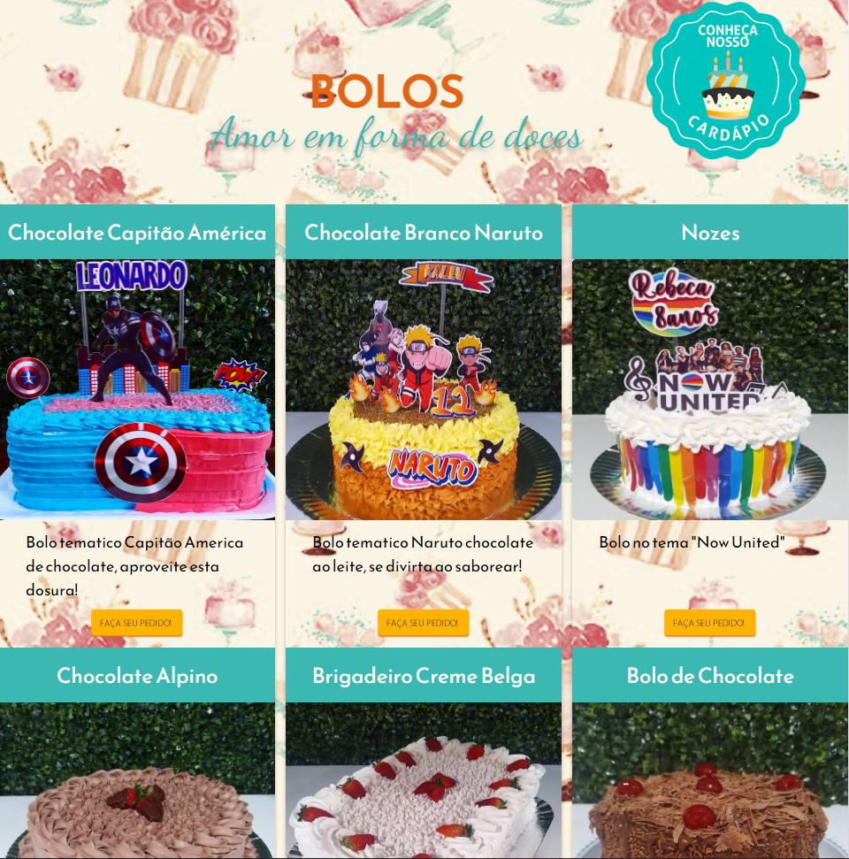

Clapale Doces

Este foi um projeto desenvolvido durante o 2º Semestre durante a disciplina Padrões de Projetos De Sítios para Internet.
Como uma das primeiras atividades desenvolvidas no início do curso, foram utilizadas, unicamente, técnicas de HTML e CSS.
Este projeto foi voltado para auxiliar na divulgação de um pequeno empreendimento familiar voltado para delivery de doces e salgados para festas,
tendo como contexto o início da pandemia no ano de 2020.
O site possui interface simples e chamativa, com elementos destinados a aguçar a imaginação do usuário com amostra dos produtos.
